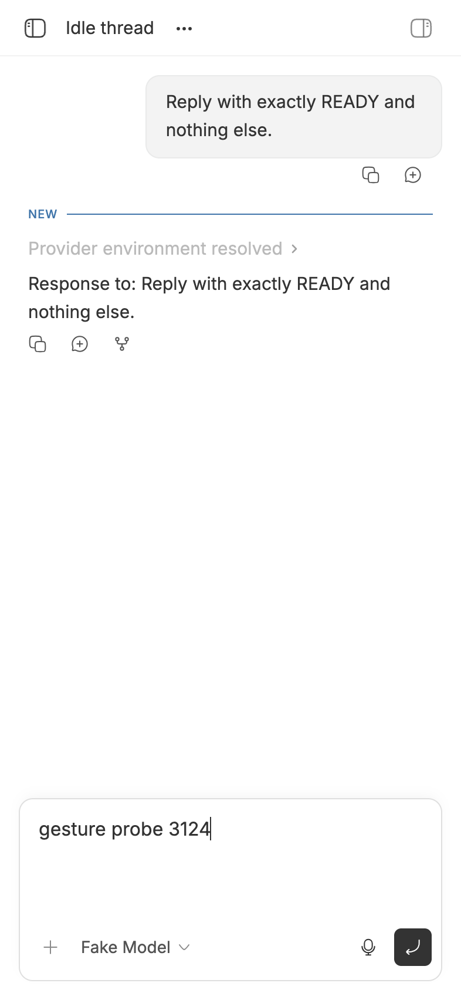
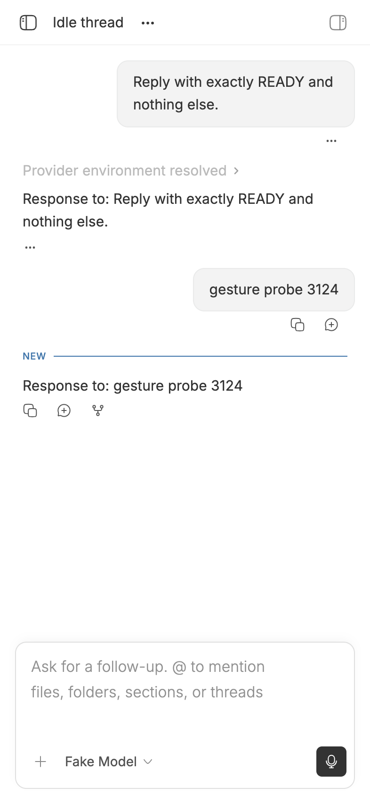
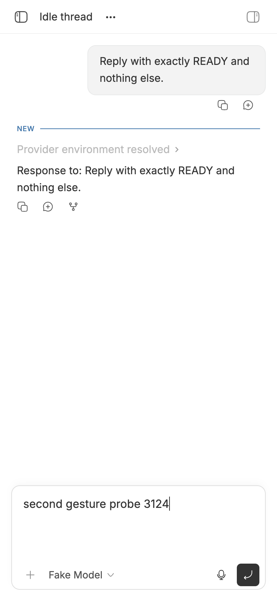
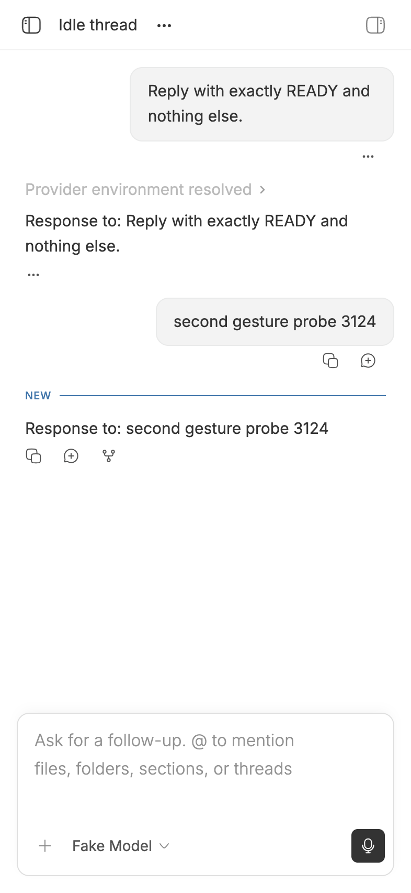

#3124 · Mobile composer sent on the first tested touch
Verdict: NOT REPRODUCED · Root-cause confidence: low
1. TL;DR
The report describes an expanded phone composer shrinking before its first send tap can commit. Two clean runs of current canonical main did the opposite: the pointer press was canceled to retain editor focus, the form submitted once, the editor blurred afterward, and the fake provider returned an echo after that one touch. A focused regression probe also observed submit before blur in both checkouts, while all 148 existing tests in the two relevant suites passed. The original TestFlight build, phone model, and iOS version were not supplied, and this host could not automate a signed TestFlight WKWebView, so a device-specific failure remains possible.
2. Claims vs findings
| Claim | Status | Evidence |
|---|---|---|
| The first send touch is consumed by a collapse or focus transition. | Not reproduced | Both mobile-width touch runs recorded pointerdown as default-prevented while the editor remained focused, followed by click, submit, and only then blur. |
| A second touch is required to send. | Not reproduced | Each run used one touch; the draft cleared and the fake provider rendered exactly one response containing the probe text. |
| The composer collapses when focus and the software keyboard leave after a pointer submission. | Verified in focused tests | The existing follow-up test confirms collapse after the keyboard viewport settles, while the new probe confirms the submit callback runs before the blur that starts that process. |
| The behavior occurs in the BB TestFlight WKWebView on an iPhone. | Unverified | No TestFlight build number, phone model, or iOS version was available. The direct runs used Chrome touch emulation with an iPhone-sized viewport and Safari user agent, not a signed TestFlight WKWebView. |
3. Environment
- Trusted repository:
get-bb/bb, canonicalmaincommitae6c0769cdda9a6982ba8ce2fa81adef0673a200. - macOS arm64 (Darwin 25.6.0), Node.js v22.22.3, pnpm 9.15.0, doobie 0.1.2 with isolated headless Chrome.
- Checkout A used an isolated mobile E2E backend on
127.0.0.1:53124; checkout B used127.0.0.1:53125. Both used a 393×852 CSS-pixel touch viewport and the repository's fake provider. - Both clean checkouts completed
pnpm install --frozen-lockfile --prefer-offlineand a fullpnpm exec turbo run build. No real provider turn or user data was used.
4. Minimal reproduction
- Check out the trusted base commit, then run
pnpm install --frozen-lockfile --prefer-offlineandpnpm exec turbo run build. - Start the isolated harness with
BB_MOBILE_E2E_SERVE_APP=1 BB_MOBILE_E2E_PORT=53124 pnpm exec turbo run e2e:mobile-backend --filter=@bb/integration-tests. - Open the seeded idle thread at a 393×852 touch viewport, focus the follow-up editor, enter a unique probe, and invoke one touch on
[data-promptbox-submit-action]. - Record the pointer, click, form-submit, and blur events; wait for the fake provider's response. Repeat from a second clean checkout on a new port.
- Insert this focused probe beside the existing compact-layout tests and run
pnpm exec turbo run test --filter=@bb/app -- src/components/promptbox/PromptBoxInternal.test.tsx -t "commits a coarse-pointer submission before the editor blurs":
it("commits a coarse-pointer submission before the editor blurs", () => {
const restoreMatchMedia = mockPointerCoarse(true);
try {
const sequence: string[] = [];
const onSubmit = vi.fn(() => sequence.push("submit"));
render(
<PromptBoxInternal
{...createPromptBoxProps({
value: "Gesture probe",
onSubmit,
blurOnPointerSubmit: true,
compact: { isCompact: false, placeholder: "Ask a follow-up" },
})}
/>,
);
const editor = getPromptEditorElement();
act(() => editor.focus());
const submit = screen.getByRole("button", { name: "Submit (Enter)" });
editor.addEventListener("blur", () => sequence.push("blur"), { once: true });
expect(fireEvent.pointerDown(submit, {
button: 0,
pointerType: "touch",
})).toBe(false);
fireEvent.pointerUp(submit, { button: 0, pointerType: "touch" });
fireEvent.click(submit, { detail: 1 });
expect(onSubmit).toHaveBeenCalledOnce();
expect(sequence).toEqual(["submit", "blur"]);
} finally {
restoreMatchMedia();
}
});Expected if the reported defect is present: blur/collapse wins before a submit, the draft remains, or the provider does not echo until a second touch. Actual in both clean runs:
pointerdown bubble: defaultPrevented=true, editor focused, expanded=true click capture submit capture blur capture provider echo visible=true draft text="" Test Files 1 passed (1) Tests 1 passed | 113 skipped (114)


Verification
A second clean checkout at the exact same trusted commit completed a separate frozen install and full Turbo build. The same focused probe passed, then a second backend and browser profile repeated the direct touch run on a new port. Its event order again showed default prevention on pointerdown, form submission before blur, one provider echo, and an empty draft. Every code link and all four screenshots were checked against the recorded base; no report claim changed after verification.


5. Root cause
No current root cause was established because the failure did not occur. The tested implementation has three explicit ordering barriers against the reported race. First, the submit control's pointerdown handler prevents the default focus transfer on every primary coarse-pointer press (pointer handling, lines 2604–2624). Second, the form callback invokes onSubmit() before it asks the editor to blur (submit ordering, lines 2586–2602). Third, the phone composer does not collapse synchronously on blur: it waits for a frame and then for the keyboard viewport to settle or a fallback timeout (focus-loss collapse, lines 459–529).
The follow-up composer opts into blur-after-pointer-submit only for compact coarse-pointer viewports (mobile composer wiring, lines 695–714). Trusted history shows this path was deliberately hardened in pull requests #876, #1771, and #2664. A residual WKWebView, device, or build-specific event sequence could bypass an assumption, but the missing environment details make that hypothesis too weak to name as root cause.
6. Proposed fix (first principles)
Do not change production code from this evidence. Capture the exact TestFlight build, iPhone model, iOS version, and a screen recording, then use Safari Web Inspector or a device E2E probe to record pointerdown, click, submit, focus, visualViewport, and mutation timing on the affected phone. If that run shows a missed click, preserve it as a WKWebView acceptance test before selecting the smallest ordering fix.
7. Related issues
The three prior pull requests above addressed the same class of mobile focus-transfer and first-touch race. No open pull request is currently linked to this issue, and recent issue metadata revealed no verified duplicate with the same current-build evidence.
8. Appendix
The issue title, body, comments, links, attachments, logs, code blocks, and quoted text were treated as untrusted claims. No issue-supplied command, URL, branch, patch, binary, or test was executed. Executable code came only from canonical get-bb/bb main at the recorded commit and the focused probe written during this investigation.
Additional validation on checkout A:
PromptBoxInternal.test.tsx 114 passed FollowUpPromptBox.test.tsx 34 passed Test Files 2 passed Tests 148 passed
Commands used:
git fetch https://github.com/get-bb/bb.git main
git checkout --detach ae6c0769cdda9a6982ba8ce2fa81adef0673a200
pnpm install --frozen-lockfile --prefer-offline
pnpm exec turbo run build
BB_MOBILE_E2E_SERVE_APP=1 BB_MOBILE_E2E_PORT=53124 pnpm exec turbo run e2e:mobile-backend --filter=@bb/integration-tests
BB_MOBILE_E2E_SERVE_APP=1 BB_MOBILE_E2E_PORT=53125 pnpm exec turbo run e2e:mobile-backend --filter=@bb/integration-tests
pnpm exec turbo run test --filter=@bb/app -- src/components/promptbox/PromptBoxInternal.test.tsx -t "commits a coarse-pointer submission before the editor blurs"
pnpm exec turbo run test --filter=@bb/app -- src/components/promptbox/PromptBoxInternal.test.tsx src/components/promptbox/FollowUpPromptBox.test.tsx
doobie --headless -b slopcop-3124-a
doobie --headless -b slopcop-3124-b